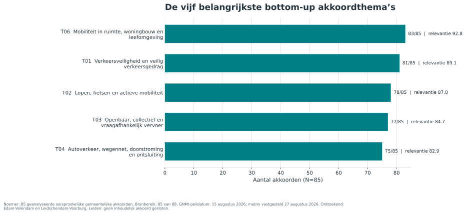

Hoofdbeeld
De GNMI-koers sluit sterk aan op de gemeentelijke agenda
De vijf actuele GNMI-prioriteitsclusters komen ieder terug in 80 tot 84 van de 85 onderzochte akkoorden. De analyse wijst daarnaast op twee collectieve opgaven die meer plaats verdienen: beheer, onderhoud en vervanging van infrastructuur, en de programmering van hoofdnetten en grote wegprojecten.

De vijf belangrijkste thema’s zijn bottom-up uit de gemeentelijke akkoorden bepaald. De GNMI-referentiematrix is pas daarna aan de akkoorden gespiegeld.
Bestaande koers
Verdiepen en actualiseren
Verkeersveiligheid, multimodale bereikbaarheid en de koppeling met ruimte en leefbaarheid vragen intensivering. Duurzame mobiliteit, data en uitvoeringskracht en parkeren vragen actualisering of verbreding.
Nieuwe programmasporen
Twee collectieve opgaven
Assetmanagement en vervanging komt voor in 57 van 85 akkoorden. Hoofdnetten en grote wegprojecten komt voor in 45 van 85 akkoorden. Beide onderwerpen hebben een duidelijke interbestuurlijke component.
Volledig dossier
Rapport, data en bronnenbewijs
Transparantie
Vaste bronbeperkingen
- Edam-Volendam: akkoord ontbreekt.
- Leidschendam-Voorburg: akkoord ontbreekt.
- Leiden: geen inhoudelijk akkoord gesloten.
- Voerendaal is meegenomen; het concept is volgens de opdrachtgever ongewijzigd vastgesteld.
- Regio Achterhoek is voorlopig en niet vergelijkbaar en heeft geen cijfermatige regioscore.